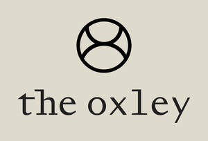

Trade Mark Journal No.2025/013 28 March 2025
UK00004172167 11 March 2025 (3,5,44)

- Class 3
- Anti-wrinkle creams [for cosmetic use]; Facial creams [cosmetic]; Facial creams [for cosmetic use]; Anti-ageing creams [for cosmetic use]; Anti-aging creams [for cosmetic use]; Anti-wrinkle cream [for cosmetic use]; Cosmetic massage creams; Facial cream [for cosmetic use]; Cosmetic facial lotions; Facial lotions [cosmetic]; Facial moisturisers [cosmetic]; Facial creams [cosmetics]; Skin hydrators being injectable dermal fillers; Self tanning creams [cosmetic]; Facial creams; Anti-wrinkle creams; Facial toners [cosmetic]; Creams (Cosmetic -); Cosmetic creams; Cosmetic creams for the skin; Skin creams [cosmetic]; Hair care creams [for cosmetic use]; Skin creams [for cosmetic use]; Facial cleansers [cosmetic]; Anti-aging serum for cosmetic use; Facial serum for cosmetic use; Body and facial creams [cosmetics]; Cosmetic facial masks; Facial masks [cosmetic]; Facial scrubs [cosmetic]; Anti-ageing creams; Anti-aging creams; Cosmetics for use in the treatment of wrinkled skin; Cosmetic hair lotions; Facial concealer; Anti-ageing serums for cosmetic purposes; Skin cream [for cosmetic use]; Facial washes [cosmetic]; Skin relief serum [cosmetic]; Acne cleansers, cosmetic; Cosmetic creams for firming skin around eyes; Toning creams [cosmetic]; Self tanning lotions [cosmetic]; Skin care creams [cosmetic]; Cosmetic creams for skin care; Wrinkle resistant creams [for cosmetic use]; Moisturising skin creams [cosmetic]; Eyebrow cosmetics; Creams for cellulite reduction; Cosmetic creams and lotions; Anti-wrinkle cream; Cleansing creams [cosmetic]; Facial makeup; Anti-ageing serum; Hair care lotions [for cosmetic use]; Hair tonic [for cosmetic use]; Facial lotions; Face creams for cosmetic use; Cosmetics for eye-brows; Cosmetic facial packs; Facial packs [cosmetic]; Hair rinses [for cosmetic use]; Anti-aging cream; Anti-aging moisturizers used as cosmetics; Lotions for cellulite reduction; Sunscreen creams [for cosmetic use]; Sun creams [for cosmetic use]; Facial cream; Hair tonics [for cosmetic use]; Facial gels [cosmetics]; Cosmetic breast firming preparations; Skin balms [cosmetic]; Hair desiccating treatments for cosmetic use; Skin recovery creams [cosmetics]; Cosmetic moisturisers; Moisturising skin lotions [cosmetic]; Cosmetic face powders; Cosmetic suntan lotions; Face powders [for cosmetic use]; Cosmetic creams for dry skin; Skin care lotions [cosmetic]; Lip cosmetics; Creams for tanning the skin; Skin toners [cosmetic]; Skin whitening creams; Creams (Skin whitening -); Skin whitening preparations [cosmetic]; Skin cleansers [cosmetic]; Facial lotion; Facial moisturizers; Dermatological creams [other than medicated]; Anti-ageing moisturiser; Beauty serums with anti-ageing properties; Wax treatments for the hair; Hair serums; Massage creams, not medicated; After-sun lotions [for cosmetic use]; Cosmetic nourishing creams; Hair preservation treatments for cosmetic use; Hair creams; Hydrating creams for cosmetic use.
- Class 5
- Injectable dermal fillers; Injectable dermal filler; Creams (Medicated -) for the lips; Medicated skin creams; Niacinamide preparations for the treatment of acne.
- Class 44
- Surgery (Cosmetic -); Cosmetic and plastic surgery; Cosmetic treatment for the hair; Cosmetic laser treatment of tattoos; Cosmetic laser treatment of varicose veins; Cosmetic treatment for the face; Injectable filler treatments for cosmetic purposes; Cosmetic and plastic surgery clinic services; Cosmetic laser treatment of skin; Cosmetic electrolysis; Cosmetic treatment; Cosmetic laser treatment of spider veins; Cosmetic surgery services; Cosmetic facial and body treatment services; Cosmetic laser treatment of unwanted hair; Cosmetic electrolysis for the removal of hair; Cosmetic treatment services for the body, face and hair; Cosmetic laser treatment for hair growth; Cosmetic treatment for the body; Plastic surgery; Surgery (Plastic -); Liposuction services; Surgery; Beauty therapy treatments; Cosmetic dentistry; Cellulite treatment services; Facial beauty treatment services.
The Oxley Limited